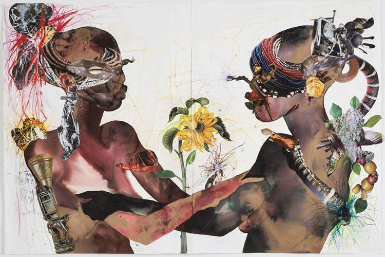
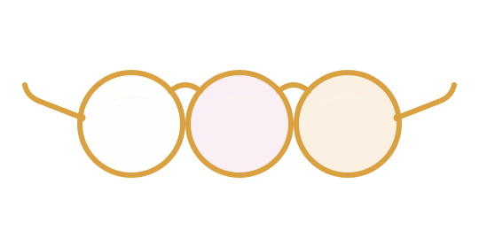
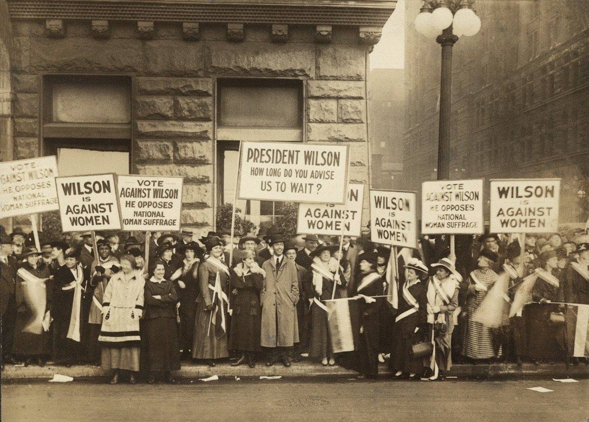
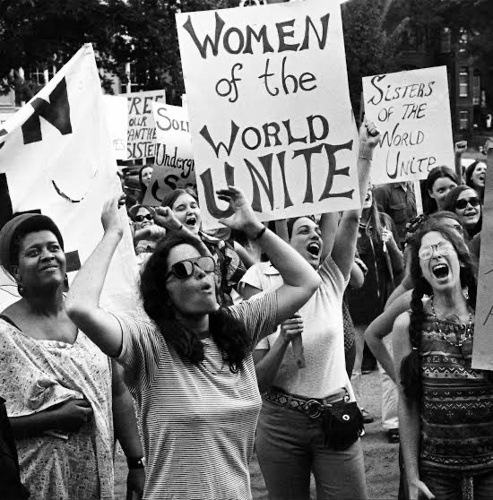
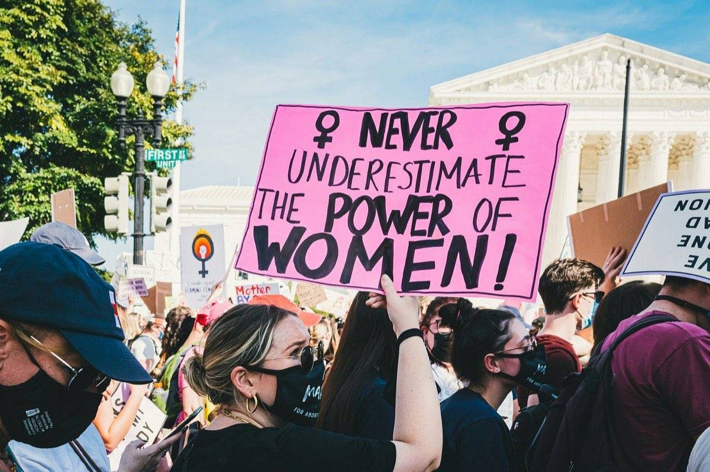
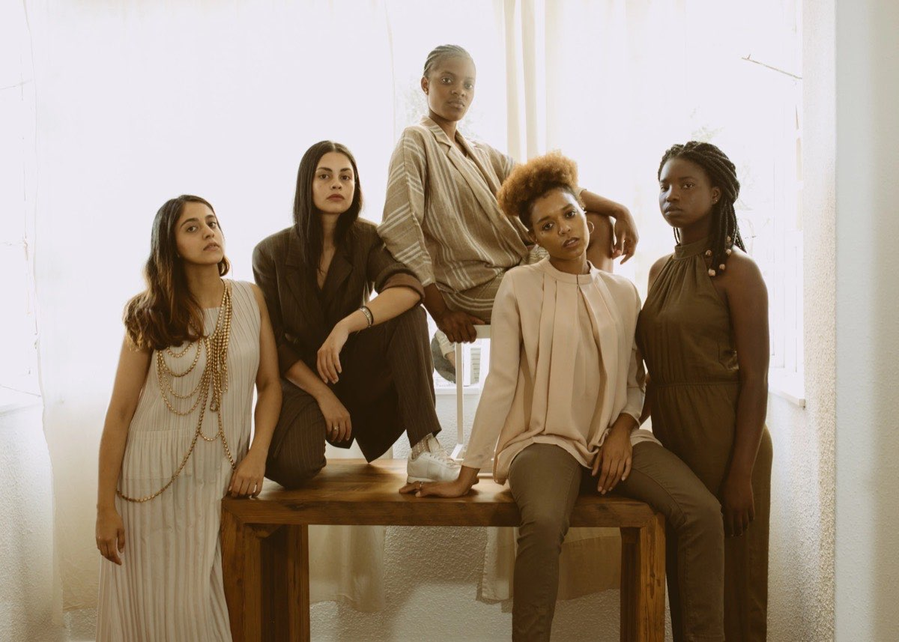

White feminism
Sees one axis: gender. Fights for women, full stop.

Learn
Pulse · live from the pre-survey
That number is the assignment. Everything on this page is the answer.
Result · the survey after viewing
The first card is the problem. This one is the marking.
Part one · the words
It isn't one flat idea. Look through three lenses and the whole picture snaps into focus.

Sees one axis: gender. Fights for women, full stop.
Defines the everyday experiences of Black women and girls, in their own words.
The knot that ties everything together: race, gender, class, all at once, under one movement.
Part two · the history · 178 years in four waves
Feminism moved like a current. It rose in waves, and it never stopped between them. Follow the thread, and tap anything that glows gold.

01The right to exist on paper.
A formerly enslaved abolitionist stands up at a women’s convention in Ohio and points at the gap in the room: this fight wasn’t including Black women.
Why it mattersShe named what the movement was leaving out 138 years before anyone had the word “intersectionality” for it. The thread starts here.
tap for why it matters
After years of petitions and a satirical “Mock Parliament,” Manitoba becomes the first Canadian province where women win the vote.
Why it mattersChange didn’t start in Ottawa. It started close to home, province by province. Local pressure works.
tap for why it matters
Women win the federal vote… unless they were of Asian descent, or First Nations, or Inuit. Many waited until 1948, or even 1960.
Why it mattersA win on paper isn’t a win for everyone. Every wave after this one exists because someone noticed who got left out.
tap for why it matters
The Famous Five take “are women persons?” all the way up, and win. Women are legally “persons” in Canada at last.
Why it mattersYou can’t sit in the Senate if the law says you’re not a person. Sometimes the fight is over one word.
tap for why it matters
Quick check · wave 01
The first wave won the vote for…
In a New Glasgow movie theatre, she refuses to leave the whites-only floor, and is arrested over one cent of tax.
Why it mattersThe history books say the waves “paused” here. Black women didn’t. She’s on the $10 bill now.
tap for why it matters

02The personal becomes political.
In Canada it could only be prescribed “for cycle regulation” until 1969. Everyone knew what it was really for.
Why it mattersDeciding if and when to have kids meant deciding everything else too: school, work, whose life this is.
tap for why it matters
The Royal Commission on the Status of Women is launched. It comes back with 167 recommendations.
Why it mattersWhat gets measured gets fixed, slowly. This report is why “equal pay for equal work” is written down at all.
tap for why it matters
Black feminists in Boston write the statement that reframes everything: if Black women were free, everybody would have to be free.
Why it mattersThis is the blueprint for the feminism this whole site teaches: freedom measured from the most excluded person up.
tap for why it matters
Gloria Jean Watkins writes as bell hooks, the name of her great-grandmother Bell Blair Hooks, kept lowercase so the work matters more than the author. The title she borrows from Sojourner Truth, 130 years later, and puts Black women back at the centre of the story.
Why it mattersThe thread loops back on itself: the question from 1851 was still waiting for an answer.
tap for why it matters
Quick check · wave 02
“The personal is political” meant…
A law professor coins one word, intersectionality, for what Sojourner, Viola, and Combahee had been living all along.
Why it mattersOnce the overlap had a name, nobody could pretend it wasn’t there. The third wave builds its whole house on it.
tap for why it matters

03Room for every kind of woman.
Photocopied, stapled, passed hand to hand: girls making their own media instead of waiting to be covered fairly.
Why it mattersIt’s the fourth wave’s group chat, on paper. When the media won’t tell your story, you become the media.
tap for why it matters
189 countries sign the biggest agreement on gender equality the world has ever made.
Why it mattersThe sentence sounds obvious now. That’s the point: it wasn’t, until 30,000 people flew to Beijing to say it.
tap for why it matters
Queer voices, non-binary voices, every culture and body type: the third wave stops looking for one “right way” to be a woman.
Why it mattersEarlier waves asked “what do women want?” The third wave answered: which women? Ask them all.
tap for why it matters
Quick check · wave 03
The third wave’s big upgrade was…
A phrase for survivors to find each other, eleven years before the hashtag made it global.
Why it mattersThe fourth wave’s loudest moment began quietly, offline, with a Black woman helping girls in her community.
tap for why it matters

04Loud, online, and for everyone.
Four women in Saskatchewan, three First Nations and one settler ally, spark an Indigenous rights movement that circles the world.
Why it mattersFeminism and land, together, led from Canada. Movements don’t need permission anymore. They need a spark.
tap for why it matters
Founded by three Black women: Alicia Garza, Patrisse Cullors, and Opal Tometi. A hashtag becomes a global civil-rights movement.
Why it mattersThe fourth wave’s DNA in one story: Black women build it, the internet carries it, the whole world moves.
tap for why it matters
Tarana Burke’s eleven-year-old phrase reaches 85+ countries in days. The cost of silence finally flips sides.
Why it mattersFor a century, speaking up cost the survivor everything. This is the moment staying silent started costing the powerful instead.
tap for why it matters
Quick check · wave 04
The fourth wave spreads mainly through…
44% of the students in our survey told us learning about feminism is boring. This timeline is the counter-argument. The next node is yours to write.
Part three · the people
Black Canadian feminist scholars whose work shapes how we understand feminism, education, and the lives of Black students. Tap a scholar to visit their page.